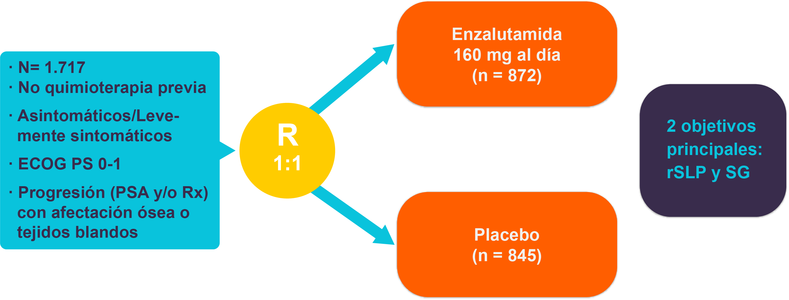

El cáncer de próstata resistente a la castración (CPRC) es la forma letal del cáncer de próstata. Cómo hemos visto previamente, a pesar de la eficacia del tratamiento radical hasta un 20-30% de estos pacientes desarrollará finalmente una recurrencia metastásica del cáncer de próstata, y de éstos, un gran número fallecerá tras el desarrollo de enfermedad resistente a la castración. Supone aproximadamente 121.900 muertes al año en los países desarrollados. En España, aún sin estadísticas realmente precisas, se estima que es la tercera causa de mortalidad por cáncer con 5. 900 muertes al año.
El incremento sostenido de la incidencia de cáncer de próstata conlleva un aumento en el número de casos potencialmente letales que con frecuencia no somos capaces de identificar en el momento del diagnóstico y que podrían beneficiarse de otras modalidades de tratamiento.
El cáncer de próstata resistente a la castración viene definido por el criterio 1 + el criterio 2 o 3 :
Supresión de los niveles de testosterona (confirmación del status de castración : < 50ng/dl o 1.7nmol/L
Progresión bioquímica :
Elevación del valor de PSA por encima de 2ng/ml o más del 25% sobre el valor de PSA nadir.
Elevación del valor de PSA en 3 determinaciones consecutivas (separadas al menos una semana entre ellas).
Si el paciente estaba recibiendo tratamiento con antiandrógenos (bicalutamida) debe confirmarse la elevación del PSA en un control analítico tras 4-6 semanas (para descartar una respuesta a la maniobra de retirada de antiandrógenos).
Progresión radiológica :
El estudio más extenso que define la biología molecular del cáncer de próstata resistente a la castración se publicó en 2015 en la revista Cell donde se secuenciaron 150 tumores metastásicos. En este trabajo se describe que un 71.3% de los casos tenían aberraciones en genes relacionados con el eje de andrógenos (mutaciones o alteraciones en el número de copias), siendo el gen más frecuentemente mutado el gen del receptor de andrógenos. La presencia de mutaciones y amplificaciones del receptor de andrógenos se ha asociado al desarrollo de resistencias de agentes hormonales (Romanel et al, Sci Transl Med 2015) aunque aún este tipo de biomarcadores no están integrados en la práctica clínica. Otra posible forma de resistencia en la vía de los andrógenos es la presencia de variantes de splicing que llevarían a una activación constitutiva del receptor de andrógeno, independientemente de la unión a su ligando. Estas variantes se han asociado a resistencia al tratamiento con enzalutamida y abiraterona (Antonarakis, NEJM 2014) pero no a quimioterapia basada en taxanos (Antonarakis, JAMA 2015).
La segunda vía más frecuentemente mutada es la vía de PI3K, que presentaba alteraciones somáticas en un 49% de los casos, siendo lo más prevalente la presencia de pérdidas bialélicas de PTEN. La pérdida de PTEN ha sido descrita previamente como factor de mal pronóstico en pacientes que reciben tratamiento con abiraterona (Ferraldeschi et al, Eur Urol 2015), encontrándose estos datos pendientes de validación.
La tercera vía más frecuentemente alterada es la vía de la reparación del ADN donde se identificaron alteracioens germinales y somáticas en un 23% de los casos estudiados, siendo el gen más recurrentemente alterado BRCA2 (12.7%). Esta frecuencia reportada fue mayor de lo que inicialmente se esperaba, y tiene importantes connotaciones terapéuticas, como una mayor sensibilidad al tratamiento con platinos o la posibilidad de tratamiento con inhibidores de PARP (indicación actualmente en desarrollo dentro de ensayos clínicos). Además, ser portador de mutaciones en BRCA1 y BRCA2 se ha asociado a un peor pronóstico (Castro et al, JCO 2013) y a una respuesta más pobre a radioterapia en estudios preliminares, pendientes de validación (Castro et al, Eur Urol 2015). Otros estudios más recientes en población no seleccionada han descrito frecuencias en línea germinal en torno al 12% en CPRC metastásico, lo que supone que a día de hoy exista un debate abierto sobre la indicación de realizar este tipo de estudios a todos los pacientes con CPRC, teniendo en cuenta las implicaciones terapéuticas y familiares. La cuarta vía más frecuentemente estudiada es la vía de Wnt, en un 18%, destacando las mutaciones en APC y CTNNB1.
Otro tipo de aberración frecuentemente presente en CPRC son las fusiones de genes, siendo la más prevalentes la fusión de genes de la familia ETS con el gen de la proteasa TMPRSS2. La presencia de reordenamientos TMPRSS-ERG se ha asociado con una mejor respuesta a abiraterona, por lo que podría tener si se confirman estos resultados a valor predictivo (Attard G, Cancer Research 2009).
Perfil molecular del cáncer de próstata metastásico resistente a la castración (Robinson D, et al. Cell 2015)
Dada la dificultad para biopsiar la enfermedad metastásica en cáncer de próstata avanzado, predominantemente ósea, se están llevando grandes esfuerzos para desarrollar técnicas de biopsia líquida que sean capaces de identificar las alteraciones previamente descritas en tiempo real, proyectando una imagen evolutiva de lo que ocurre con el tumor en cada momento.
En la mayoria de los casos, el diagnostico de enfermedad sistemica se declara como consecuencia de un incremento en los niveles de PSA despues de un tratamiento local para el cáncer de próstata (o tras dos tratamietnos locales en el caso de que el paciente haya recibido una opción radical de rescate). En esta situacion, incluso en ausencia de datos solidos, la deprivación androgénica temprana, por medio de hormona liberadora de gonadotropina (GnRH), o con la orquiectomia, se ha convertido en el tratamiento habitual de dichos pacientes. En consecuencia, una gran proporcion de los pacientes estarán recibiendo ADT en la ausencia de cualquier metastasis detectable, y dado que esa ADT no sera curativa cuando se use aisladamente, una proporcion de estos pacientes progresará y se volverá resistente a la castracion (CRPC). Aunque ese CRPC se puede definir en caso de progresion bioquimica, progresion radiologica y/o clinica, con niveles de testosterona en rango de castración, la mayoria de los casos CRPC se declaran en forma de progresion de PSA en ausencia de cualquier metastasis detectable.
El CPRC no metastasico se define como el aumento de PSA en un varon con niveles de castracion de testosterona, en ausencia de evidencias radiologicas (mediante técnicas convencionales utilizadas como TAC/RMN o gammagrafia osea) o clínicas de metástasis.
La epidemiologia de estas progresiones es actualmente poco fiable por la falta de registros. Kirby et al. (Int J Clin Cancer 2011) publicaron una revisión sistemática que incluía 12 estudios y un total de 71.179 pacientes con cáncer de próstata, estimando que el 10-20% de los pacientes desarrollan CPRC en aproximadamente 5 años de seguimiento. Ademas, el 84% mostraron tener metástasis al momento del diagnostico de resistencia a la castración. Por lo tanto, en esta revisión se identificaron un 16% de pacientes M0 al diagnostico del CPRC, de los cuales el 33% desarrolló metástasis oseas en un plazo de 2 años.
La introduccion de nuevas técnicas de imagen puede modificar esta proporción de pacientes. En los pacientes CPRC M0, la gammagrafia osea es, en la mayoria de casos, el primer examen que revela la presencia de enfermedad metastasica. La sensibilidad de esta técnica es limitada y la posible incorporación de otras técnicas como la tomografía por emisión de positrones (PET) con los nuevos radiotrazadores de colina/PSMA o la resonancia magnética de cuerpo entero podría incrementar todavía más este número de pacientes. Esto, una vez más tendrá un impacto en la definición de la enfermedad mediante la creación de un grupo de pacientes oligometastásicos resistentes a la castración.
También existía hasta hace poco, una falta de consenso respecto a la frecuencia y el tipo de exploración radiológica efectuada. En muchos casos, se seguía a estos pacientes exclusivamente con PSA, por lo que la presencia de CPRC M0 ocurría casi constantemente primero.
Hasta el año 2018, no se había demostrado que ningún tratamiento pudiese mejorar la supervivencia de los pacientes con CPRC M0, y el manejo estándar era el seguimiento. No obstante, tal como revisaremos a continuación los resultados de los ensayos clínicos con apalutamida y enzalutamida van muy seguramente a cambiar el manejo de esta entidad, encontrándose actualmente pendiente de aprobación por las autoridades sanitarias.
Tres ensayos prospectivos han investigado el beneficio potencial de agentes óseos como el ácido zoledronico, el atrasentan y el denosumab sobre el desarrollo de metástasis y, especialmente, las metástasis óseas en pacientes CRPC M0.
El estudio de ácido zoledronico (ZOL) se diseñó para evaluar los efectos de ZOL sobre el tiempo hasta la primera metástasis ósea en hombres con CPRC M0 definidos por un PSA en aumento a pesar de estar bajo tratamiento con deprivación androgénica (Smith MR et al, JCO 2005). El estudio se cerró antes de su finalización tras un análisis intermedio que demostró que la tasa de eventos observada fue menor de la esperada. Sin embargo, este estudio proporcionó información útil sobre la velocidad y el factor de riesgo de las metástasis óseas en los 201 pacientes del grupo de placebo. La primera observación fue que la mediana de tiempo al desarrollo de metástasis óseas (BM- PFS) fue de 30 meses, mucho más de lo esperado. A los 2 años, solo el 33 % de los pacientes habían desarrollado metástasis óseas. Este estudio aún negativo para el zoledrónico, ha ayudado a comprender los factores que pueden influir en el desarrollo de metastasis oseas, como el nivel de PSA y la velocidad de elevación del PSA.
Nelson et al. (Cancer 2008) llevaron a cabo un ensayo fase III doble ciego similar, controlado con placebo en 941 CPRC M0 con atrasentan (antagonista del receptor de endotelina, con actividad selectiva sobre la metástasis ósea). En este paciente se seleccionaron tumores con una cinética más rápida. La media del tiempo de duplicación de PSA (PSA DT) fue de 5,9 meses frente a 9,7 meses en los ensayos ZOL. A los 2 años, el 46 % de los sujetos había desarrollado metástasis óseas, y el 20% habían muerto. La mediana de la supervivencia libre de progresión (SLP) fue 25 meses. En el análisis multivariable, el PSA basal < 13,1ng/ml se asoció con SLP más corta y menor tiempo hasta la primera metástasis ósea. En contraste con el estudio de ZOL, los pacientes fueron seguidos con gammagrafias oseas y TAC o RMN. En aproximadamente uno de cada cinco pacientes, el primer lugar de la metástasis fue el esqueleto. No se alcanzó el objetivo principal (diferencias en tiempo a la progresión).
El tercer estudio, liderado por Smith et al (JCO 2013), ha investigado el beneficio de denosumab, en 1.432 pacientes CPRC M0. Los criterios de inclusión específicamente requerían un nivel basal de PSA ≥8 ng/ml o un PSA DT ≤10 meses, o ambos. Los pacientes fueron seguidos con gammagrafía ósea, siendo la progresión solo registrada por los investigadores. La mediana de supervivencia libre de metástasis óseas fue de 25,2 meses en el grupo placebo. No se observaron diferencias en supervivencia global. Otros sub-análisis han sido reportados con el objetivo de identificarsubgrupos de alto riesgo, viendo que podrían beneficiarse aquellos pacientes con PSA DT más cortos.
Teniendo en cuenta que aquellos pacientes con CPRC M0 y un PSA DT más corto tienen más riesgo de desarrollar metástasis, se han llevado 3 grandes ensayos fase III para tratar a este grupo de pacientes con nuevos agentes hormonales que actúan como inhibidores competitivos del receptor de andrógenos (manteniendo siempre la deprivación androgénica): enzalutamida, apalutamida y darolutamida (este último ensayo, ARAMIS, está aún pendiente de publicación).
Apalutamida (ensayo SPARTAN)
Diseño del ensayo SPARTAN (Smith, NEJM 2018)
En este ensayo Fase III se evalúo la eficacia de apalutamida vs placebo mediante una aleatorización 2:1 y un diseño doble ciego. Se incluyeron 1207 hombres con CPRC M0 con un tiempo a la duplicación del PSA (PSA DT) ≤10 meses. El objetivo principal fue la supervivencia libre de metástasis (SLM), que se definió como el tiempo desde la aleatorización a la aparición de la primera metástasis en una prueba de imagen o a la muerte. La mediana de PSADT en los pacientes incluidos en el brazo de apalutamida fue de 4.4 meses. Se alcanzó el objetivo principal en el primer análisis plafinificado, con una diferencia en SLM de 40.5 vs 16.2 meses a favor del grupo de apalutamida (HR 0.23; P < 0.001). La tasa de efectos adversos que llevó a discontinuar el tratamiento fue de 10.6% en el grupo de apalutamida vs 7% en el grupo placebo. Los efectos secundarios más frecuentes fueron: rash (23.8% vs. 5.5%), hipotiroidismo (8.1% vs. 2.0%), y fracturas (11.7% vs. 6.5%). No se dispone aún de datos maduros de supervivencia.
Enzalutamida (ensayo PROSPER)
Diseño del ensayo PROSPER (Hussain, NEJM 2018)
Con un diseño similar al anterior, en este ensayo fase III doble ciego se incluyeron 1401 pacientes CPRC M0 con un tiempo de duplicación de PSA (PSA DT) ≤10 meses, con un método de aleatorización 2:1 a tratarse con enzalutamida vs placebo. El objetivo principal del estudio fue la supervivencia libre de metastasis (SLM). La mediana de PSA DT fue de 3.7 meses. La mediana de SLM fue de 36.6 meses en el grupo de enzalutamide vs 14.7 meses en el grupo de placebo (HR 0.29; P < 0.001). El tiempo a la progression bioquímica fue de 37.2 vs 3.9 meses a favour de enzalutamide (HR 0.07, p < 0.001). Los efectos adversos grado 3/4 aparecienron en el 31% en el brazo experimental vs 23% en el brazo placebo. No se dispone aún de datos maduros de supervivencia al no haberse alcanzado el número de eventos aún necesario para su análisis.
Las metástasis de pacientes con CPRC metastásico pueden tener tres patrones definidos con pronóstico y manejo significativamente diferente :
• Afectación ganglionar exclusiva |
|
• Afectación ósea, con o sin afectación ganglionar simultánea |
|
• Afectación visceral, independientemente de cualquiera de las anteriores |
Patrón de metástasis en CPRC está asociado con pronóstico
Evolución del tratamiento del cáncer de próstata resistente a la castración. En la figura pueden observarse los fármacos actualmente aprobados para esta indicación, que se revisarán a continuación. Sipuleucel-T es una inmunoterapia basada en una vacuna autóloga de células dendríticas que sólo ha sido aprobada por la FDA en Estados Unidos.
Hasta el año 2004 ningún tratamiento había conseguido demostrar una mejoría en supervivencia en cáncer de próstata resistente a la castración. El tratamiento con esteroides o el mitoxantrone se utilizaban en ese momento por su capacidad para lograr mejorías sintomáticas transitorias, pero sin beneficio pronóstico, sin ser capaces de modificar la evolución de la enfermedad.
En el año 2004 se publican los resultados de 2 grandes ensayos clínicos con el esquema de tratamiento docetaxel/prednisona, que consiguen demostrar mejorar la supervivencia, suponiendo un hito en ese momento y que suponen la aprobación entonces de la combinación como primera línea de tratamiento en cáncer de próstata metastásico resistente a la castración.
En el estudio de Tannock et al, con un diseño de 3 ramas en el que se comparó docetaxel trisemanal (75 mg/m2 cada tres semanas), docetaxel semanal (30 mg semanales por 5 de cada 6 semanas) y mitoxantrona (12 mg/m2 cada tres semanas), se obtuvo una ventaja en supervivencia global a 3 años para la rama de docetaxel trisemanal (18.6% versus 13.5% para el brazo de mitoxantrona; HR 0,79; IC 95%: 0.67–0.93). La calidad de vida también fue superior en el grupo de docetaxel trisemanal (p =0,009). Sin embargo, la tasa de SG para el régimen de docetaxel semanal fue de 16.6%, sin encontrar una mejoría estadísticamente significativa respecto a la mitoxantrona.
Diseño y resultados del ensayo fase III TAX327 (Tannock, NEJM 2004), con docetaxel + prednisona vs mitoxantrona + prednisona en 1ª linea CPRC. SG= supervivencia global, QoL=calidad de vida
Diseño y resultados del ensayo fase III SWOG 9916 (Petrylak, NEJM 2004), con estramustina + docetaxel + prednisona vs mitoxantrona + prednisona en 1ª linea CPRC. SG= supervivencia global, SLP=supervivencia libre de progresión
En el estudio de Petrylak et al, también en pacientes con CPRC, se aleatorizó a los pacientes a recibir estramustina y docetaxel frente a estramustina y mitoxantrona, encontrando tras una mediana de seguimiento de 32 meses que la mediana de SG era de 17,5 meses en el grupo de estramustina/docetaxel en comparación con 15,6 meses en el grupo de mitoxantrona (p = 0,02; CRI para la muerte = 0,80; IC 95%, 0,67–0,97). La calidad de vida en términos globales y la paliación del dolor fueron similares en ambos grupos.
Cabazitaxel es un taxano de nueva generación que, a diferencia de docetaxel y paclitaxel no es sustrato de la glucoproteína-P. La eficacia y seguridad de este agente anti-microtúbulo fue probada en el estudio TROPIC, un fase III aleatorizado de cabazitaxel versus mitoxantrona en pacientes con CPRC, obteniéndose una mediana de supervivencia de 15.1 meses (IC 95%: 14.1-16.3) frente a los 12.7 meses (IC 95%: 11.6-13.7) de los enfermos que recibieron mitoxantrona.
Diseño y resultados del ensayo fase III TROPIC que evalúa cabazitaxel vs mitaxontrona tras docetaxel en pacientes con CPRC. OS= overall survival
En los estudios realizados con taxanos los principals efectos secundarios fueron la presencia de anemia y neutropenia (hasta el 90% de los casos con cabazitaxel con cerca de un 10% de casos con neutropenia febril, por lo que se recomienda el uso profilactico de tratamiento con factores estimulantes de colonias), seguido de trombopenia y diarrea. Menos frecuentes son las náuseas y vómitos, la asthenia, el dolor abdominal o la anorexia.
Tras docetaxel han sido desarrolladas nuevas terapias hormonales como son abiraterona y enzalutamida.
Abiraterona es un inhibidor altamente selectivo e irreversible del CYP17-α- hidroxilasa y la C17, 20-liasa que provoca la inhibición del CYP17 y, por tanto, bloquea la síntesis extragonadal de andrógenos. De Bono et al. publicaron en 2011 los resultados del estudio COU-AA-301, un fase III multicéntrico que demostró la superioridad de abiraterona/prednisona frente a placebo/prednisona en pacientes con CPRC en progresión tras haber recibido docetaxel/prednisona. En la última actualización del ensayo, se objetivó un incremento de supervivencia de 4.6 meses para el brazo de abiraterona, con un HR: 0.74 (IC 95%: 0.64-0.86; p < 0. 0001).
Los datos de un segundo estudio, el COU-AA-302, esta vez en el marco de pacientes sin metástasis viscerales asintomáticos u oligosintomáticos, mostró un aumento significativo del tiempo a la progresión radiológica (16,5 vs 8,3 meses, HR 0,53, p < 0,001) así como una mayor supervivencia global (mediana no alcanzada tras 22,2 meses de seguimiento vs 27,2 meses, HR=0,75, p=0,01) en el brazo de los pacientes tratados con abiraterona más prednisona frente al brazo de placebo con prednisona.
Diseño y resultados de objetivos principales del ensayo III COU-302 (Ryan, NEJM 2013) de abiraterona + prednisona en 1ª línea CPRC. rSLP= supervivencia libre de progresión radiológica. SG= supervivencia global.
La dosis recomendadada es de 1000mg al día (2 comprimidos de 500mg) + prednisona 10mg/día. Los efectos secundarios más frecuentes descritos con abiraterona son :
La asociación de corticoides disminuye la intensidad de estos efectos secundarios secundarios a la insuficiencia suprarenal, derivada de la supresión de la enzima CYP17A1. Todas las situaciones clínicas que puedan empeorar su estado basal con estas reacciones adversas, como la toma de digitálicos, la insuficiencia cardíaca, la isquemia cardíaca o insuficiencia renal grave, obligan a un seguimiento estrecho, aunque no contraindican el tratamiento con abiraterona.
El tratamiento con Abiraterona puede provocar elevación de las transaminasas en alrededor de un 4% de los pacientes. Este hecho se ha observado en los ensayos clínicos realizados para evaluar el fármaco y se desconoce su causa. Es más frecuente si los valores basales están elevados antes de iniciar el tratamiento. No se debe tratar con Abiraterona a pacientes con insuficiencia hepática grave y debe hacerse con precaución en pacientes con insuficiencia hepática moderada. Recomendaciones: Se deben evaluar las transaminasas antes de iniciar el tratamiento y con periodicidad mensual una vez iniciado.
El grupo de población diana para el tratamiento con abiraterona son hombres sometidos a un periodo prolongado de deprivación androgénica. Estos pacientes suelen presentar densidad ósea reducida y un mayor riesgo de eventos relacionados con el esqueleto. El fármaco asociado a un corticoide puede intensificar el efecto. Recomendaciones: medida basal de densidad mineral ósea y durante el tratamiento (T-score); suplementos de calcio (1500 mg) y vit D (800 UI); ejercicio físico, control del peso. En función de la densitometría y la existencia de metastasis óseas valorar el tratamiento con bifosfonatos o denosumab.
Enzalutamida es un antagonista del receptor androgénico e inhibidor de la vía de señalización del receptor de andrógenos al impedir la translocación del receptor hormonal del citoplasma al núcleo. En el estudio AFFIRM en pacientes con CPRC tras progresión a docetaxel/prednisona y en comparación con placebo, enzalutamida demostró un incremento en la mediana de supervivencia global (SG) de 4.8 meses (18.4 meses versus 13.6 meses para placebo; HR: 0.631; p < 0. 0001).
En 1ª línea enzalutamida consiguió la aprobación tras los resultados del ensayo PREVAIL, un fase III que compara en pacientes resistentes a la castración enzalutamida con placebo y que ha mostrado un beneficio significativo del brazo de enzalutamida al reducir un 81% el riesgo de progresión radiológica (HR 0.19) y un 30% el riesgo de muerte por cáncer de próstata (HR 0,70). En este ensayo además se permitía incluir pacientes con enfermedad visceral.
Diseño y principales resultados del ensayo PREVAIL en 1ª línea CPRC. rSLP= supervivencia libre de progresión radiológica. SG= supervivencia global.
La dosis recomendada es de 160mg/día (4 comprimido de 40mg). Debido a su mecanismo de acción, no afecta a la síntesis suprarrenal de esteroides y, por tanto, no se precisa la administración concomitante de corticoides. Puede ser administrado con o sin alimentos.
Los acontecimientos adversos relacionados con enzalutamidamás frecuentes fueron astenia e hipertensión arterial. Se ha descrito en >1% de pacientes un riesgo aumentado de crisis epilépticas. Por ello, se debe tener precaución en pacientes con antecedentes de crisis epilépticas u otros factores de predisposición, entre ellos, lesión cerebral subyacente, ictus, tumores cerebrales primarios, metástasis cerebrales, o alcoholismo. Además, el riesgo de crisis epilépticas puede ser mayor en los pacientes tratados con medicamentos concomitantes que reducen el umbral epiléptico.
Enzalutamida es un inductor enzimático potente y puede dar lugar a una pérdida de eficacia de muchos medicamentos de uso común. Por lo tanto, cuando se inicia el tratamiento con enzalutamida se debe realizar una revisión de los medicamentos concomitantes que se metabolizan por los mismos citocromo (principalmente CYP3A y CYP2C). Entre los principales fármacos a tener en cuenta por sus interacciones con enzalutamida se encuentran :
• Analgésicos (p. ej. fentanilo, tramadol) |
|
• Antibióticos (p. ej. claritromicina, doxiciclina) |
|
• Anticoagulantes (p. ej. acenocumarol, warfarina) |
|
• Antiepilépticos (p. ej. carbamazepina, clonazepam, fenitoína, primidona, ácido valproico) |
|
• Antipsicóticos (p. ej. haloperidol) |
|
• Betabloqueantes (p. ej. bisoprolol, propranolol) |
|
• Antagonistas del canal del calcio (p. ej. diltiazem, felodipino, nicardipino, nifedipino, verapamilo) |
|
• Glucósidos cardíacos (p. ej. digoxina) |
|
• Corticoides (p. ej. dexametasona, prednisolone |
|
• Hipnóticos (p. ej. diazepam, midazolam, zolpidem) |
|
• Estatinas metabolizadas por el CYP3A4 (p. ej. atorvastatina, simvastatina) |
|
• Medicamentos tiroideos (p. ej. levotiroxina) |
El último tratamiento aprobado en CPRC en los últimos años ha sido Radium-223 y el primer radioisótopo que ha demostrado impacto en supervivencia en esta enfermedad (previamente se había usado estroncio o samario con intención meramente paliativa en pacientes con metástasis óseas).
En 2011 se comunicaron los resultados de un fase III multicéntrico (ALSYMPCA), aleatorizado, comparativo contra placebo, en el que se comparaba Alpharadin (cloruro de radio 223) frente a placebo en pacientes con CPRC con metástasis óseas que habían recibido docetaxel o habían declinado su uso observando un aumento en la supervivencia global de 14 meses versus 11.2 meses frente a placebo (HR: 0.695; IC 95% 0.552-0.875; p=0. 0018) en el análisis inicial intermedio. En 2013 se publicaron los resultados de eficacia actualizados tras incluir 921 pacientes, confirmándose una ventaja en supervivencia global para la rama experimental de 14.9 vs 11.3 meses (HR: 0.70; IC 95% 0.58-0.83; p < 0.001). Se encontró además una disminución estadísticamente significativa en el tiempo al primer evento óseo sintomático a favor de los pacientes tratados con Radium-223 (HR: 0.66, IC 95% 0.52-0.83, p < 0. 001).
Diseño del ensayo clínico Fase III ALSYMPCA (Parker C, NEJM 2013)
Resultados de Supervivencia Global ensayo ALSYMPCA (Parker C, et al.NEJM 2013)
Actualmente existe un ensayo clínico aleatorizado en marcha (ERA trial) que evalúa la eficacia y seguridad de la combinación de Radium-223 con nuevos agentes hormonales (abiraterona, enzalutamida). En el brazo de Radium-223 + abiraterona tuvo que detenerse prematuramente el reclutamiento tras observar un aumento en el número de eventos óseos y muertes. Actualmente está en activo el brazo de Radium-223 + enzalutamida, pendiente de resultados.
La eleción de la terapia se realizará en función de los criterios de inclusión de ensayos clínicos, y el perfil de toxicidad de cada estrategia.
Docetaxel plus Prednisone or Mitoxantrone plus prednisone for advanced Prostate Cancer |
Abiraterone in Metastatic Prostate Cancer without previous chemotherapy |
Enzalutamide in Metastatic Prostate Cancer before chemotherapy |
Alpha emitter Radium-223 and survival in metastatic prostate cancer |
Docetaxel |
Abiraterona |
Enzalutamida |
Radium-223 |
|---|---|---|---|
Sintomático |
Asintomático |
Asintomático |
Sintomático |
Mts viscerales |
No Mts Viscerales |
Mts viscerales |
No Mts Viscerales |
PREDNISONA |
PREDNISONA |
No PDN |
No PDN |
Efectos adversos |
Cardiotoxicidad HTA |
Astenia |
Mts óseas |
Para la evaluación de respuesta se utilizan los criterios del Prostate Cancer Working Group 3 (Scher HI, JCO 2016) :
En ausencia de signos clínicos de progresión, los cambios precoces (primeras 12 semanas de tratamiento) en indicadores como PSA, dolor y gammagrafía ósea, deben IGNORARSE por la existencia de un posible efecto “Flare”.
Durante la exposición al fármaco, si no hay clara evidencia de progresión, deterioro clínico o compromiso de la seguridad de administración, ante la duda de aquella, se debe continuar la misma pauta terapéutica priorizando en el beneficio clinico del paciente.
Para la evaluación de respuesta se utilizan los criterios del Prostate Cancer Working Group 3 (Scher HI, JCO 2016) :
Si reducción inicial con el tratamiento
⇧PSA ≥ 25% y ≥ 2ng/mL sobre nadir, confirmado en 2ª determinación 3 o más semanas después.
Si no reducción con el tratamiento
⇧PSA ≥ 25% y ≥ 2ng/mL sobre PSA basal, después de 12 semanas.
Se utilizan los criterios RECIST en lesiones de partes blandas, ganglionares y viscerales. Es fundamental :
Diferenciar entre crecimiento de lesiones existentes Vs aparición de nuevas.
Medir correctamente adenopatías: se utilizará el eje corto de adenopatías y se recogerán cambios en ganglios > 1.5 cm en la evaluación basal (ganglios entre 1-1.5 cm no se considera enfermedad medible aunque debe reportarse en el informe).
En el caso de la evaluación de la respuesta ósea por gammagrafía, se considerará progresión cuando aparezcan al menos 2 lesiones nuevas en la primera evaluación, que requerirán confirmación con al menos 2 lesiones adicionales 6 semanas después (Regla 2+2).
Aumento significativo de síntomas respecto a la evaluación basal, que se determinará de acuerdo con el criterio clinico del especialista que trata al paciente.
Los ensayos con bifosfonatos en CPRCm fueron llevados a cabo cuando no existían otros tratamientos oncológicos con impacto en supervivencia más allá de docetaxel.
En esta población se llevó a cabo un ensayo fase 3 con 643 pacientes con metastasis óseas que se aleatorizaron a recibir ácido zoledrónico a dosis de 4 u 8mg cada 3 semanas vs placebo. La dosis de 8mg fue mal tolerada por lo que se desestimó continuar con su uso. Respecto al brazo de zoledrónico 4mg, se describió una disminución significative en el número de eventos óseos comparado con el grupo placebo (44 vs. 33%, p = 0.021) y principalmente en el nímero de fracturas patológicas. No se ha descrito impacto en supervivencia en ningún ensayo clinico prospective con la asociación de bifosfonatos.
La administración de zoledronato debe ajustarse a la función renal. No existe un consenso en cuanto a la frecuencia de su administración (cada 3-12 semanas). Deberá individualizarse en cada caso en función del tiempo esperable de tratamiento y el riesgo a priori, de cara a minimizar el riesgo de osteonecrosis mandibular. Se recomienda antes de comenzar el tratamiento con bifosfonatos realizar una valoración de la salud dental.
RANK-L es un mediador de la formación, función y supervivencia de los osteoclastos, fundamentals para preserver el equilibrio en el recambio óseo. Denosumab es un anticuerpo monoclonal humanizado con gran afinidad por RANK-L.
En CPRCm se llevó a cabo un ensayo clinico fase 3 para evaluar la eficacia y seguidad de denosumab (n = 950) comparado con ácido zoledrónico (n = 951). En este ensayo denosumab demostró superioridad frente a zoledrónico en el retraso o prevención de eventos óseos demostrando un retraso en la aparición de fracturas patológicas, necesidad de irradiación o cirugía ósea, o aparición de compression medular de 20.7 vs. 17.1 meses, respectivamente (HR: 0.82; p = 0.008). De nuevo, al igual que con los bifosfonatos, no se ha demostrado ningún beneficio en supervivivencia. También existe con este fármaco riesgo de osteonecrosis.